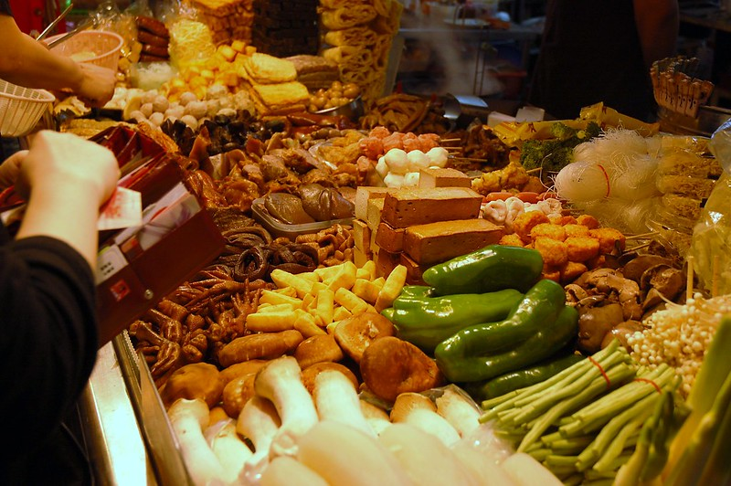
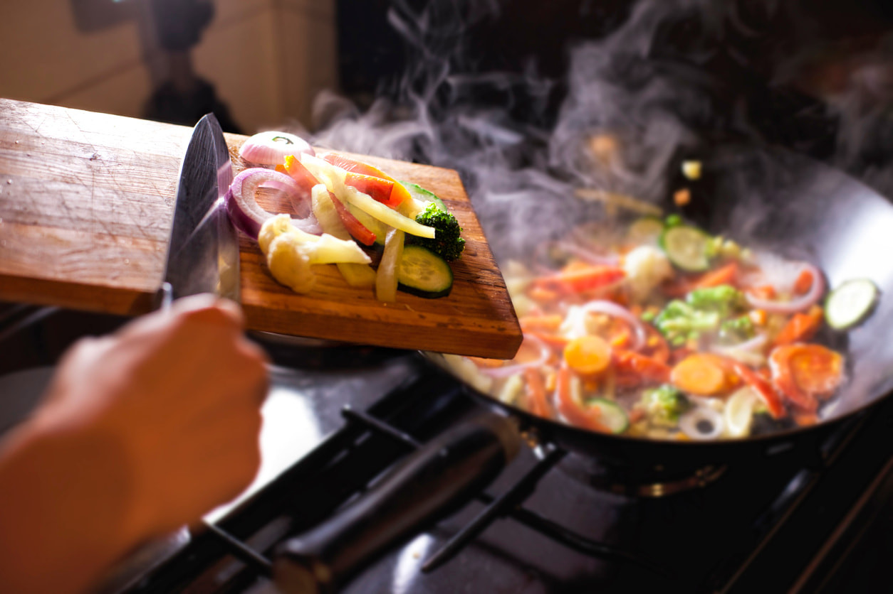

Apa yang Membuat Makanan Taiwan Unik?
Ayo Kita Coba Cari Tahu!
Night Market Culture
Taiwan memiliki budaya night market yang sangat populer, di mana pengunjung dapat menikmati berbagai makanan jalanan otentik yang menggoda selera dalam suasana yang ramai dan penuh warna.

Bahan Segar
Setiap hidangan khas Taiwan dibuat menggunakan bahan-bahan segar pilihan dengan standar kualitas tinggi, sehingga menghasilkan rasa autentik dan manfaat gizi yang optimal.

Teknik Memasak
Teknik memasak tradisional yang digunakan dalam masakan Taiwan telah diwariskan lintas generasi, memadukan metode kuno dengan cita rasa modern yang tetap mempertahankan keasliannya.
"Makanan Taiwan adalah perpaduan sempurna antara tradisi dan inovasi, menciptakan pengalaman kuliner yang tak terlupakan"
 (900 x 100 piksel).png)